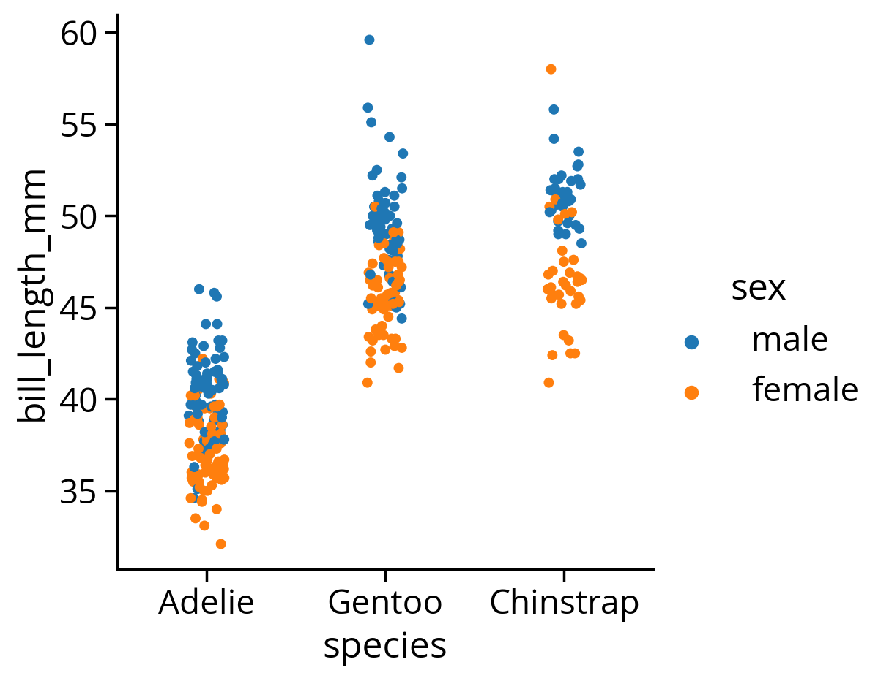

# The imports
import pandas as pd
import numpy as np
from matplotlib import pyplot as plt
# Make sure plots show up in JupyterLab!
%matplotlib inlineWeek 2B: Data Visualization Fundamentals
- Section 401
- Sep 13, 2023
Housekeeping
- HW #1 due on Wednesday 9/20
- HW #2 posted on same day (9/20)
- Lots of good questions on Ed Discussion so far!
- Email me if you need access: https://edstem.org/us/courses/42616/discussion/
Reminder: Quick links to course materials and main sites (Ed Discussion, Canvas, Github) can be found in the upper right corner of the top navbar:
Reminder: Office Hours
- Nick:
- Teresa: Fridays 10:30AM-12:00PM
- Remote: sign-up for time slots on Canvas calendar
Week #2 Recap
- Week #2 repository: https://github.com/MUSA-550-Fall-2023/week-2
- Recommended readings for the week listed here
Last time
- A brief overview of data visualization
- Practical tips on color in data vizualization
Today
Reminder: following along with lectures
Easiest option: Binder

Harder option: downloading Github repository contents

Recommended readings
Be sure to check out the recommended readings for the week:
- Guide to getting started with matplotlib
- Plotting & visualization chapter of Python for Data Analysis
- A good introduction to plotting with matplotlib, pandas, and seaborn
- Altair:
- Data viz design: Introductory slides of London’s design guidelines
The Python data viz landscape
So many tools…so little time
Which one is the best?
There isn’t one…
You’ll use different packages to achieve different goals, and they each have different things they are good at.
Today, we’ll focus on: - matplotlib: the classic - pandas: built on matplotlib, quick plotting built in to DataFrames - seaborn: built on matplotlib, adds functionality for fancy statistical plots - altair: interactive, relying on javascript plotting library Vega
And next week for geospatial data: - holoviews/geoviews - matplotlib/cartopy - geopandas/geopy
Goal: introduce you to the most common tools and enable you to know the best package for the job in the future
The classic: matplotlib
- Very well tested, robust plotting library
- Can reproduce just about any plot (sometimes with a lot of effort)

With some downsides…
- Imperative, overly verbose syntax
- Little support for interactive/web graphics
Available functionality
- Don’t need to memorize syntax for all of the plotting functions
- Example gallery: https://matplotlib.org/stable/gallery/index.html
- See the cheat sheet available in this repository
Most commonly used:
Working with matplotlib
We’ll use the object-oriented interface to matplotlib - Create Figure and Axes objects - Add plots to the Axes object - Customize any and all aspects of the Figure or Axes objects
- Pro: Matplotlib is extraordinarily general — you can do pretty much anything with it
- Con: There’s a steep learning curve, with a lot of matplotlib-specific terms to learn
Learning the matplotlib language

Recommended reading
- Introduction to the object-oriented interface
- A good walk through on using matplotlib to customize plots
- Listed in the README for this week’s repository too

Let’s load some data to plot…
We’ll use the Palmer penguins data set, data collected for three species of penguins at Palmer station in Antartica


Artwork by @allison_horst
# Load data on Palmer penguins
penguins = pd.read_csv("./data/penguins.csv")# Show the first ten rows
penguins.head(n=10) | species | island | bill_length_mm | bill_depth_mm | flipper_length_mm | body_mass_g | sex | year | |
|---|---|---|---|---|---|---|---|---|
| 0 | Adelie | Torgersen | 39.1 | 18.7 | 181.0 | 3750.0 | male | 2007 |
| 1 | Adelie | Torgersen | 39.5 | 17.4 | 186.0 | 3800.0 | female | 2007 |
| 2 | Adelie | Torgersen | 40.3 | 18.0 | 195.0 | 3250.0 | female | 2007 |
| 3 | Adelie | Torgersen | NaN | NaN | NaN | NaN | NaN | 2007 |
| 4 | Adelie | Torgersen | 36.7 | 19.3 | 193.0 | 3450.0 | female | 2007 |
| 5 | Adelie | Torgersen | 39.3 | 20.6 | 190.0 | 3650.0 | male | 2007 |
| 6 | Adelie | Torgersen | 38.9 | 17.8 | 181.0 | 3625.0 | female | 2007 |
| 7 | Adelie | Torgersen | 39.2 | 19.6 | 195.0 | 4675.0 | male | 2007 |
| 8 | Adelie | Torgersen | 34.1 | 18.1 | 193.0 | 3475.0 | NaN | 2007 |
| 9 | Adelie | Torgersen | 42.0 | 20.2 | 190.0 | 4250.0 | NaN | 2007 |
Data is already in tidy format
A simple visualization, 3 different ways
I want to scatter flipper length vs. bill length, colored by the penguin species
1. Using matplotlib
# Setup a dict to hold colors for each species
color_map = {"Adelie": "#1f77b4", "Gentoo": "#ff7f0e", "Chinstrap": "#D62728"}
# Initialize the figure "fig" and axes "ax"
fig, ax = plt.subplots(figsize=(10, 6))
# Group the data frame by species and loop over each group
# NOTE: "group" will be the dataframe holding the data for "species"
for species, group in penguins.groupby("species"):
print(f"Plotting {species}...")
# Plot flipper length vs bill length for this group
# Note: we are adding this plot to the existing "ax" object
ax.scatter(
group["flipper_length_mm"],
group["bill_length_mm"],
marker="o",
label=species,
color=color_map[species],
alpha=0.75,
)
# Plotting is done...format the axes!
## Add a legend to the axes
ax.legend(loc="best")
## Add x-axis and y-axis labels
ax.set_xlabel("Flipper Length (mm)")
ax.set_ylabel("Bill Length (mm)")
## Add the grid of lines
ax.grid(True)Plotting Adelie...
Plotting Chinstrap...
Plotting Gentoo...2. How about in pandas?
DataFrames have a built-in “plot” function that can make all of the basic type of matplotlib plots!
# Tab complete on the plot attribute of a dataframe to see the available functions
#penguins.plot.First, we need to add a new “color” column specifying the color to use for each species type.
Use the pd.replace() function: it use a dict to replace values in a DataFrame column.
# Calculate a list of colors
color_map = {"Adelie": "#1f77b4", "Gentoo": "#ff7f0e", "Chinstrap": "#D62728"}
# Map species name to color
penguins["color"] = penguins["species"].replace(color_map)
penguins.head()| species | island | bill_length_mm | bill_depth_mm | flipper_length_mm | body_mass_g | sex | year | color | |
|---|---|---|---|---|---|---|---|---|---|
| 0 | Adelie | Torgersen | 39.1 | 18.7 | 181.0 | 3750.0 | male | 2007 | #1f77b4 |
| 1 | Adelie | Torgersen | 39.5 | 17.4 | 186.0 | 3800.0 | female | 2007 | #1f77b4 |
| 2 | Adelie | Torgersen | 40.3 | 18.0 | 195.0 | 3250.0 | female | 2007 | #1f77b4 |
| 3 | Adelie | Torgersen | NaN | NaN | NaN | NaN | NaN | 2007 | #1f77b4 |
| 4 | Adelie | Torgersen | 36.7 | 19.3 | 193.0 | 3450.0 | female | 2007 | #1f77b4 |
Now plot!
# Same as before: Start by initializing the figure and axes
fig, ax = plt.subplots(figsize=(10, 6))
# Scatter plot two columns, colored by third
# Use the built-in pandas plot.scatter function
penguins.plot.scatter(
x="flipper_length_mm",
y="bill_length_mm",
c="color",
alpha=0.75,
ax=ax, # IMPORTANT: Make sure to plot on the axes object we created already!
)
# Format the axes finally
ax.set_xlabel("Flipper Length (mm)")
ax.set_ylabel("Bill Length (mm)")
ax.grid(True)
Note: no easy way to get legend added to the plot in this case…
Disclaimer
- In my experience, I have found the
pandasplotting capabilities are good for quick and unpolished plots during the data exploration phase - Most of the pandas plotting functions serve as shorcuts, removing some biolerplate matplotlib code
- If I’m trying to make polished, clean data visualization, I’ll usually opt to use matplotlib from the beginning
3. Seaborn: statistical data visualization
Seaborn is designed to plot two columns colored by a third column…
import seaborn as sns# Initialize the figure and axes
fig, ax = plt.subplots(figsize=(10, 6))
# style keywords as dict
color_map = {"Adelie": "#1f77b4", "Gentoo": "#ff7f0e", "Chinstrap": "#D62728"}
style = dict(palette=color_map, s=60, edgecolor="none", alpha=0.75)
# use the scatterplot() function
sns.scatterplot(
x="flipper_length_mm", # the x column
y="bill_length_mm", # the y column
hue="species", # the third dimension (color)
data=penguins, # pass in the data
ax=ax, # plot on the axes object we made
**style # add our style keywords
)
# Format with matplotlib commands
ax.set_xlabel("Flipper Length (mm)")
ax.set_ylabel("Bill Length (mm)")
ax.grid(True)
ax.legend(loc='best')<matplotlib.legend.Legend at 0x1572e6170>
Side note: the **kwargs syntax
The ** syntax is the unpacking operator. It will unpack the dictionary and pass each keyword to the function.
So the previous code is the same as:
sns.scatterplot(
x="flipper_length_mm",
y="bill_length_mm",
hue="species",
data=penguins,
ax=ax,
palette=color_map, # defined in the style dict
edgecolor="none", # defined in the style dict
alpha=0.5 # defined in the style dict
)But we can use **style as a shortcut!
An aside: the seaborn objects interface
Seaborn recently introduced an “objects” interface, a completely new syntax that aims to be more declarative. It hides the interaction with matplotlib for the user and provides an more intuitive way to customize charts.
You’ll see a lot of similarities between the “objects” interface and the next library we will talk about: altair.
Note
Since it’s so new and not yet finalized, we won’t recommend using it during this course. However, we wanted to make sure you’re aware of it as it could be a good option in the future. More info can be found on seaborn’s documentation.
As a reference, our scatterplot example would look like this in the “objects” interface:
import seaborn.objects as so(
so.Plot(x="flipper_length_mm", y="bill_length_mm", color="species", data=penguins)
.add(so.Dot())
.scale(color=color_map)
.layout(size=(10, 6))
.label(x="Flipper Length (mm)", y="Bill Length (mm)")
# Warning: this theme syntax is not yet finalized!
.theme({"axes.facecolor": "w", "axes.edgecolor": "k"})
)Many more functions available
In general, seaborn is fantastic for visualizing relationships between variables in a more quantitative way
Don’t memorize every function…
I always look at the beautiful Example Gallery for ideas.
How about adding linear regression lines?
Use lmplot()
sns.lmplot(
x="flipper_length_mm",
y="bill_length_mm",
hue="species",
data=penguins,
height=6,
aspect=1.5,
palette=color_map,
scatter_kws=dict(edgecolor="none", alpha=0.5),
);/Users/nhand/mambaforge/envs/musa-550-fall-2023/lib/python3.10/site-packages/seaborn/axisgrid.py:118: UserWarning: The figure layout has changed to tight
self._figure.tight_layout(*args, **kwargs)
How about the smoothed 2D distribution?
Use jointplot()
sns.jointplot(
x="flipper_length_mm",
y="bill_length_mm",
data=penguins,
height=8,
kind="kde",
cmap="viridis",
);
How about comparing more than two variables at once?
Use pairplot()
# The variables to plot
variables = [
"species",
"bill_length_mm",
"flipper_length_mm",
"body_mass_g",
"bill_depth_mm",
]
# Set the seaborn style
sns.set_context("notebook", font_scale=1.5)
# make the pair plot
sns.pairplot(
penguins[variables].dropna(),
palette=color_map,
hue="species",
plot_kws=dict(alpha=0.5, edgecolor="none"),
)/Users/nhand/mambaforge/envs/musa-550-fall-2023/lib/python3.10/site-packages/seaborn/axisgrid.py:118: UserWarning: The figure layout has changed to tight
self._figure.tight_layout(*args, **kwargs)Let’s explore the bill length differences across species and gender
We can use seaborn’s functionality for exploring categorical data sets: catplot()
sns.catplot(x="species", y="bill_length_mm", hue="sex", data=penguins);/Users/nhand/mambaforge/envs/musa-550-fall-2023/lib/python3.10/site-packages/seaborn/axisgrid.py:118: UserWarning: The figure layout has changed to tight
self._figure.tight_layout(*args, **kwargs)
Seaborn tutorials broken down by data type
Color palettes in seaborn
Great tutorial available in the seaborn documentation
Tip
The color_palette() function in seaborn is very useful. For me, it is the easiest way to get a list of hex strings for a specific color map.
# This is a list of hex strings values for the colors
viridis = sns.color_palette("viridis", n_colors=7).as_hex()
# Print it out to see the list
print(viridis)['#472d7b', '#3b528b', '#2c728e', '#21918c', '#28ae80', '#5ec962', '#addc30']Can we preview the colors in JupyterLab?
# Option 1: Use the sns.palplot() function to make a matplotlib figure
sns.palplot(viridis)# Option 2: If you output it from a cell, JupyterLab automatically renders it
viridisYou can also create custom light, dark, or diverging color maps, based on the desired hues at either end of the color map.
sns.diverging_palette(10, 220, sep=50, n=7)4. Altair: Declarative Data Viz in Python

Documentation available at: https://altair-viz.github.io/
The altair import statement
import altair as alt A visualization grammar
- Specify what should be done
- Details determined automatically
- Charts are really just visualization specifications and the data to make the plot
- Relies on vega and vega-lite
Important: focuses on tidy data — you’ll often find yourself running pd.melt() to get to tidy format
Let’s try out our flipper length vs bill length example:
# Step 1: Initialize the chart with the data
chart = alt.Chart(penguins)
# Step 2: Define what kind of marks to use
chart = chart.mark_circle(size=60)
# Step 3: Encode the visual channels
chart = chart.encode(
x="flipper_length_mm",
y="bill_length_mm",
color="species",
tooltip=["species", "flipper_length_mm", "bill_length_mm", "island", "sex"],
)
# Optional: Make the chart interactive
chart.interactive()Altair shorcuts
- There are built-in objects to represent “x”, “y”, “color”, “tooltip”, etc..
- Using the object syntax allows your to customize how different elements behave
Example: previous code is the same as
chart = chart.encode(
x=alt.X("flipper_length_mm"),
y=alt.Y("bill_length_mm"),
color=alt.Color("species"),
tooltip=alt.Tooltip(["species", "flipper_length_mm", "bill_length_mm", "island", "sex"]),
)Changing Altair chart axis limits
- By default, Altair assumes the axis will start at 0
- To center on the data automatically, we need to use a
alt.Scale()object to specify the scale
# initialize the chart with the data
chart = alt.Chart(penguins)
# define what kind of marks to use
chart = chart.mark_circle(size=60)
# encode the visual channels
chart = chart.encode(
x=alt.X("flipper_length_mm", scale=alt.Scale(zero=False)), # This part is new!
y=alt.Y("bill_length_mm", scale=alt.Scale(zero=False)), # This part is new!
color="species",
tooltip=["species", "flipper_length_mm", "bill_length_mm", "island", "sex"],
)
# make the chart interactive
chart = chart.interactive()
chartEncodings
- X: x-axis value
- Y: y-axis value
- Color: color of the mark
- Opacity: transparency/opacity of the mark
- Shape: shape of the mark
- Size: size of the mark
- Row: row within a grid of facet plots
- Column: column within a grid of facet plots
For a complete list of these encodings, see the Encodings section of the documentation.
Altair charts can be fully specified as JSON \(\rightarrow\) easy to embed in HTML on websites!
# Save the chart as a JSON string!
json = chart.to_json()# Print out the first 1,000 characters
print(json[:1000]){
"$schema": "https://vega.github.io/schema/vega-lite/v5.14.1.json",
"config": {
"view": {
"continuousHeight": 300,
"continuousWidth": 300
}
},
"data": {
"name": "data-6e6be28484bfcb7bdf9764c3163fc5aa"
},
"datasets": {
"data-6e6be28484bfcb7bdf9764c3163fc5aa": [
{
"bill_depth_mm": 18.7,
"bill_length_mm": 39.1,
"body_mass_g": 3750.0,
"color": "#1f77b4",
"flipper_length_mm": 181.0,
"island": "Torgersen",
"sex": "male",
"species": "Adelie",
"year": 2007
},
{
"bill_depth_mm": 17.4,
"bill_length_mm": 39.5,
"body_mass_g": 3800.0,
"color": "#1f77b4",
"flipper_length_mm": 186.0,
"island": "Torgersen",
"sex": "female",
"species": "Adelie",
"year": 2007
},
{
"bill_depth_mm": 18.0,
"bill_length_mm": 40.3,
"body_mass_g": 3250.0,
"color": "#1f77b4",
Publishing the visualization online
chart.save("chart.html")# Display IFrame in IPython
from IPython.display import IFrame
IFrame('chart.html', width=600, height=375)Watch out for large datasets!
Note that the data is embedded inside the JSON representation of the chart. That means that if you pass a DataFrame to your chart with a lot of data, your browser might be overwhelmed and everything might freeze. To avoid this, altair will throw an error if your DataFrame has more than 5,000 rows.
There are a number of strategies outlined on the docs for dealing with larger datasets. One is to simply disable the max rows check — this could be a good idea if your dataset is just a bit larger than the limit.
alt.data_transformers.disable_max_rows()Another strategy is to use the more flexible “vegafusion” library, which has improved implementations of data transformations and allows charts with data up to 100,000 rows. You can enable this transformer with:
alt.data_transformers.enable("vegafusion")
Note
If you get an error about missing packages, make sure you update your course environment to the latest version. See the instructions here.
Usually, the function calls are chained together
Surround your code with parentheses, and put each line of code on a new line
chart = (
alt.Chart(penguins)
.mark_circle(size=60)
.encode(
x=alt.X("flipper_length_mm", scale=alt.Scale(zero=False)),
y=alt.Y("bill_length_mm", scale=alt.Scale(zero=False)),
color="species:N",
)
.interactive()
)
chartNote that the interactive() call allows users to pan and zoom.
Altair is able to automatically determine the type of the variable using built-in heuristics. Altair and Vega-Lite support four primitive data types:
| Data Type | Code | Description |
|---|---|---|
| quantitative | Q | Numerical quantity (real-valued) |
| nominal | N | Name / Unordered categorical |
| ordinal | O | Ordered categorial |
| temporal | T | Date/time |
You can set the data type of a column explicitly using a one letter code attached to the column name with a colon:
Faceting
Easily create multiple views of a dataset with faceting
(
alt.Chart(penguins)
.mark_point()
.encode(
x=alt.X("flipper_length_mm:Q", scale=alt.Scale(zero=False)),
y=alt.Y("bill_length_mm:Q", scale=alt.Scale(zero=False)),
color="species:N",
)
.properties(width=200, height=200)
.facet(column="species")
.interactive()
)Note: I’ve added the variable type identifiers (Q, N) to the previous example
Lots of features to create compound charts: repeated charts, faceted charts, vertical and horizontal stacking of subplots.
See the documentation for examples
A grammar of interaction
A relatively new addition to altair, vega, and vega-lite. This allows you to define what happens when users interact with your visualization.
Tip
I highly recommend reading through the documentation section on interactive charts. Altair’s interaction language is very complex and you can do a lot, including adding widgets (e.g., sliders) and multiple kinds of selection windows.
A faceted plot, now with interaction!
# Create the selection box
brush = alt.selection_interval()
(
alt.Chart(penguins) # Create the chart
.mark_point() # Use point markers
.encode( # Encode
x=alt.X("flipper_length_mm", scale=alt.Scale(zero=False)), # X
y=alt.Y("bill_length_mm", scale=alt.Scale(zero=False)), # Y
# Use a conditional color based on brush
color=alt.condition(brush, "species", alt.value("lightgray")), # Color
tooltip=["species", "flipper_length_mm", "bill_length_mm"], # Tooltip
)
.add_params(brush) # Add brush parameter
.properties(width=200, height=200) # Set width/height
.facet(column="species") # Facet
)More on conditions
We used the alt.condition() function to specify a conditional color for the markers. It takes three arguments:
- The
brushobject determines if a data point is currently selected - If inside the
brush, color the marker according to the “species” column - If outside the
brush, use the literal hex color “lightgray”
Selecting across multiple variables
Let’s examine the relationship between flipper_length_mm, bill_length_mm, and body_mass_g
We’ll use a repeated chart that repeats variables across rows and columns.
Use a conditional color again, based on a brush selection.
# Setup the selection brush
brush = alt.selection(type="interval", resolve="global")
# Setup the chart
(
alt.Chart(penguins)
.mark_circle()
.encode(
x=alt.X(alt.repeat("column"), type="quantitative", scale=alt.Scale(zero=False)),
y=alt.Y(alt.repeat("row"), type="quantitative", scale=alt.Scale(zero=False)),
color=alt.condition(
brush, "species:N", alt.value("lightgray")
), # conditional color
)
.properties(
width=200,
height=200,
)
.add_params(brush)
.repeat( # repeat variables across rows and columns
row=["flipper_length_mm", "bill_length_mm", "body_mass_g"],
column=["body_mass_g", "bill_length_mm", "flipper_length_mm"],
)
)/Users/nhand/mambaforge/envs/musa-550-fall-2023/lib/python3.10/site-packages/altair/utils/deprecation.py:65: AltairDeprecationWarning: 'selection' is deprecated.
Use 'selection_point()' or 'selection_interval()' instead; these functions also include more helpful docstrings.
warnings.warn(message, AltairDeprecationWarning, stacklevel=1)More exploratory visualization
Let’s try out some more features of Altair…these examples are meant as reference for you to showcase some common features.
Reminder
The Example Gallery is a great place to learn the full functionality of Altair and includes a lot of great examples!
Example 1: Color schemes
Scatter flipper length vs body mass for each species, colored by sex
(
alt.Chart(penguins)
.mark_point()
.encode(
x=alt.X("flipper_length_mm", scale=alt.Scale(zero=False)),
y=alt.Y("body_mass_g", scale=alt.Scale(zero=False)),
color=alt.Color("sex:N", scale=alt.Scale(scheme="set2")),
)
.properties(width=400, height=150)
.facet(row="species")
)
Note
I’ve specified the scale keyword to the alt.Color() object and passed a scheme value:
scale=alt.Scale(scheme="set2")
The scheme “set2” is a Color Brewer color. The available color schemes are very similar to those matplotlib. A list is available on the Vega documentation: https://vega.github.io/vega/docs/schemes/.
Example 2: Histogram aggregations with count
Next, plot the total number of penguins per species by the island they are found on.
(
alt.Chart(penguins)
.mark_bar()
.encode(
# X should show the (normalized) count of each group
x=alt.X("*:Q", aggregate="count", stack="normalize"), # The * is a placeholder here
y="island:N",
color="species:N",
tooltip=["island", "species", "count(*):Q"],
)
)
Note
I like to think of altair aggregations in terms of the pandas groupby syntax. Under the hood, altair is going to group our data by the other encodings we specified, “island” and “species”. The dimension (“X”) that gets specified as the count aggregation is then the size of each of those groups.
Example 3: The count() shorthand
Plot a histogram of number of penguins by flipper length, grouped by species.
(
alt.Chart(penguins)
.mark_bar()
.encode(
x=alt.X("flipper_length_mm", bin=alt.Bin(maxbins=20)),
y="count():Q", # Shorthand
color="species",
tooltip=["species", alt.Tooltip("count()", title="Number of Penguins")],
)
.properties(height=250)
)Example 4: Binning data and using the mean aggregation
Finally, let’s bin the data by body mass and plot the average flipper length per bin, colored by the species.
In this example, we use a “binning” transformation to bin the data along a certain encoding (“X” in this case), and then we will take the mean along the “Y” encoding.
(
alt.Chart(penguins.dropna())
.mark_line()
.encode(
x=alt.X("body_mass_g:Q", bin=alt.Bin(maxbins=10)), # Bin the data!
y=alt.Y(
"mean(flipper_length_mm):Q", scale=alt.Scale(zero=False) # Mean of flipper length
),
color="species:N",
tooltip=["mean(flipper_length_mm):Q", "count():Q"],
)
.properties(height=300, width=500)
)
Tip
In addition to mean() and count(), you can apply a number of different transformations to the data before plotting, including binning, arbitrary functions, and filters.
See the Data Transformations section of the user guide for more details.
Dashboards become easy to make…
# Setup a brush selection
brush = alt.selection(type="interval")
# The top scatterplot: flipper length vs bill length
points = (
alt.Chart()
.mark_point()
.encode(
x=alt.X("flipper_length_mm:Q", scale=alt.Scale(zero=False)),
y=alt.Y("bill_length_mm:Q", scale=alt.Scale(zero=False)),
color=alt.condition(brush, "species:N", alt.value("lightgray")),
)
.properties(width=800)
.add_params(brush)
)
# The bottom bar plot
bars = (
alt.Chart()
.mark_bar()
.encode(
x="count(species):Q",
y="species:N",
color="species:N",
)
.transform_filter(
brush # the filter transform uses the selection to filter the input data to this chart
)
.properties(width=800)
)
# Final chart is a vertical stack
chart = alt.vconcat(points, bars, data=penguins)
# Output the chart
chartExercise: Visualizing the impact of the measles vaccination
Let’s reproduce this famous Wall Street Journal visualization showing measles incidence over time using altair.
http://graphics.wsj.com/infectious-diseases-and-vaccines/
Step 1: Load the data
# Note we are using a relative path
path = "./data/measles_incidence.csv"
# Skip first two rows and convert "-" to NaN automatically
data = pd.read_csv(path, skiprows=2, na_values="-")
data.head()| YEAR | WEEK | ALABAMA | ALASKA | ARIZONA | ARKANSAS | CALIFORNIA | COLORADO | CONNECTICUT | DELAWARE | ... | SOUTH DAKOTA | TENNESSEE | TEXAS | UTAH | VERMONT | VIRGINIA | WASHINGTON | WEST VIRGINIA | WISCONSIN | WYOMING | |
|---|---|---|---|---|---|---|---|---|---|---|---|---|---|---|---|---|---|---|---|---|---|
| 0 | 1928 | 1 | 3.67 | NaN | 1.90 | 4.11 | 1.38 | 8.38 | 4.50 | 8.58 | ... | 5.69 | 22.03 | 1.18 | 0.4 | 0.28 | NaN | 14.83 | 3.36 | 1.54 | 0.91 |
| 1 | 1928 | 2 | 6.25 | NaN | 6.40 | 9.91 | 1.80 | 6.02 | 9.00 | 7.30 | ... | 6.57 | 16.96 | 0.63 | NaN | 0.56 | NaN | 17.34 | 4.19 | 0.96 | NaN |
| 2 | 1928 | 3 | 7.95 | NaN | 4.50 | 11.15 | 1.31 | 2.86 | 8.81 | 15.88 | ... | 2.04 | 24.66 | 0.62 | 0.2 | 1.12 | NaN | 15.67 | 4.19 | 4.79 | 1.36 |
| 3 | 1928 | 4 | 12.58 | NaN | 1.90 | 13.75 | 1.87 | 13.71 | 10.40 | 4.29 | ... | 2.19 | 18.86 | 0.37 | 0.2 | 6.70 | NaN | 12.77 | 4.66 | 1.64 | 3.64 |
| 4 | 1928 | 5 | 8.03 | NaN | 0.47 | 20.79 | 2.38 | 5.13 | 16.80 | 5.58 | ... | 3.94 | 20.05 | 1.57 | 0.4 | 6.70 | NaN | 18.83 | 7.37 | 2.91 | 0.91 |
5 rows × 53 columns
Note: the data is weekly and in wide format
Step 2: Calculate the total incidents in a given year per state
Hints
- You’ll want to take the sum over weeks to get the annual total — you can take advantage of the
groupby()thensum()work flow. - It will be helpful if you drop the
WEEKcolumn — you don’t need that in the grouping operation. Take a look at thedf.drop(columns=[]) function (docs).
Step 3: Transform to tidy format
Hints
You can use melt() to get tidy data. You should have 3 columns: year, state, and total incidence.
Step 4: Make the plot
Hints
- Take a look at this heatmap example for an example of the syntax of Altair’s heatmap functionality.
- You can use the
mark_rect()function to encode the values as rectangles and then color them according to the average annual measles incidence per state. - You’ll want to take advantage of the custom color map defined below to best match the WSJ’s graphic.
# Define a custom colormape using Hex codes & HTML color names
colormap = alt.Scale(
domain=[0, 100, 200, 300, 1000, 3000],
range=[
"#F0F8FF",
"cornflowerblue",
"mediumseagreen",
"#FFEE00",
"darkorange",
"firebrick",
],
type="sqrt",
)Challenges
- Do you agree with the visualization choices made by the WSJ?
- Try experimenting with different color scales to see if you can improve the heatmap
- See the names of available color maps in Altair
- Try adding a second chart above the heatmap that shows a line chart of the annual average across all 50 states.
Challenge #1: Exploring other color maps
The categorical color scale choice is properly not the best. It’s best to use a perceptually uniform color scale like viridis. See below:
Challenge #2: Add the annual average chart on top
That’s it!
- HW #1 due on Wednesday Sept 20 before the end of the day
- Wrapping up altair and geospatial analysis and visualization next week!